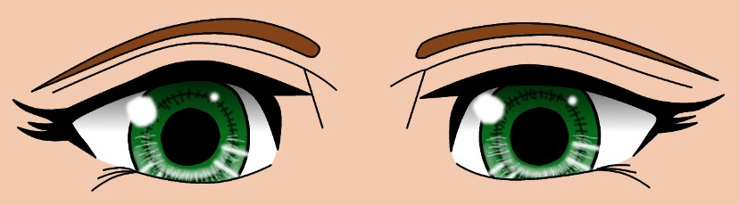

Why I Think video Games are Good for you.
HI! Im Analise, im the creator of this page. I am interested in this topic, because of my love for video games. This argument between wether or not video games are good for you or not has een going on for 3 decades (30 years)! Personally, I think video games are good for you because it can help with your reflexes, and they can help "train" you for survival, and other outcomes of what COULD be a dangerous event. Did I mention that certain games could inspire people to do things thet originally dont beleive they could do. Video games do have a downside aswell, don't get me wrong. They can effect your eyesight, depending on how long your looking the screen for, and they could make certain people act dangerously, or out of character.
What Experts say about the topic:
" Video games give us the opportunity to experience the world in new ways and respond to different environments and scenarios. " -ASU New Literacy Studies professor James Paul Gee
"So when McGonigal suffered a traumatic brain injury a few years ago, she created her own game to help herself heal. Called Jane the Concussion Slayer, McGonigal came up with a secret identity for herself, sought out allies to help her get better and gave herself “power-ups” when she reached new benchmarks in the healing process. She’s turned this into a program called “SuperBetter” to help others work through depression, anxiety, brain injuries and chronic illnesses. And she says activating this “gameful mindset” helps people heal better, and faster." -Jane Mcgonigal
